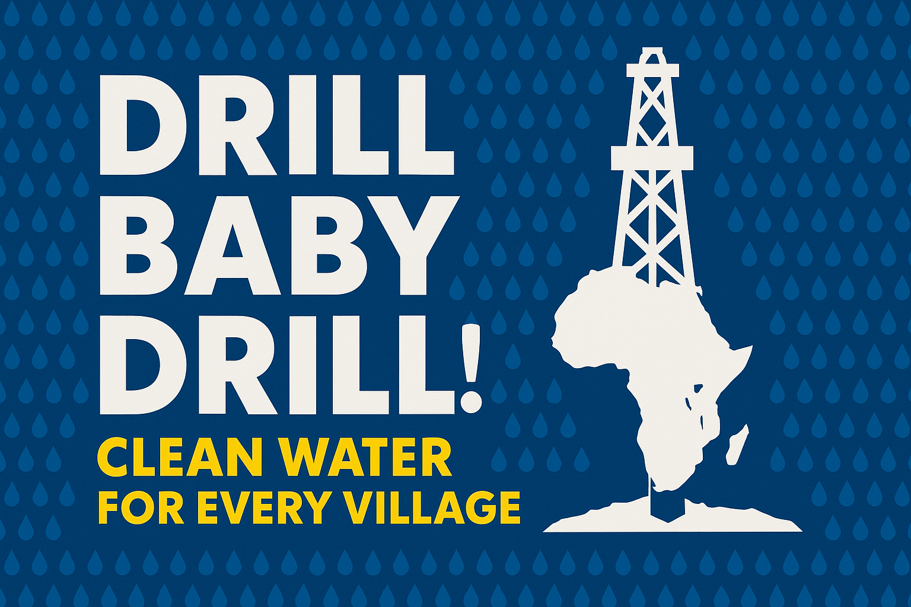
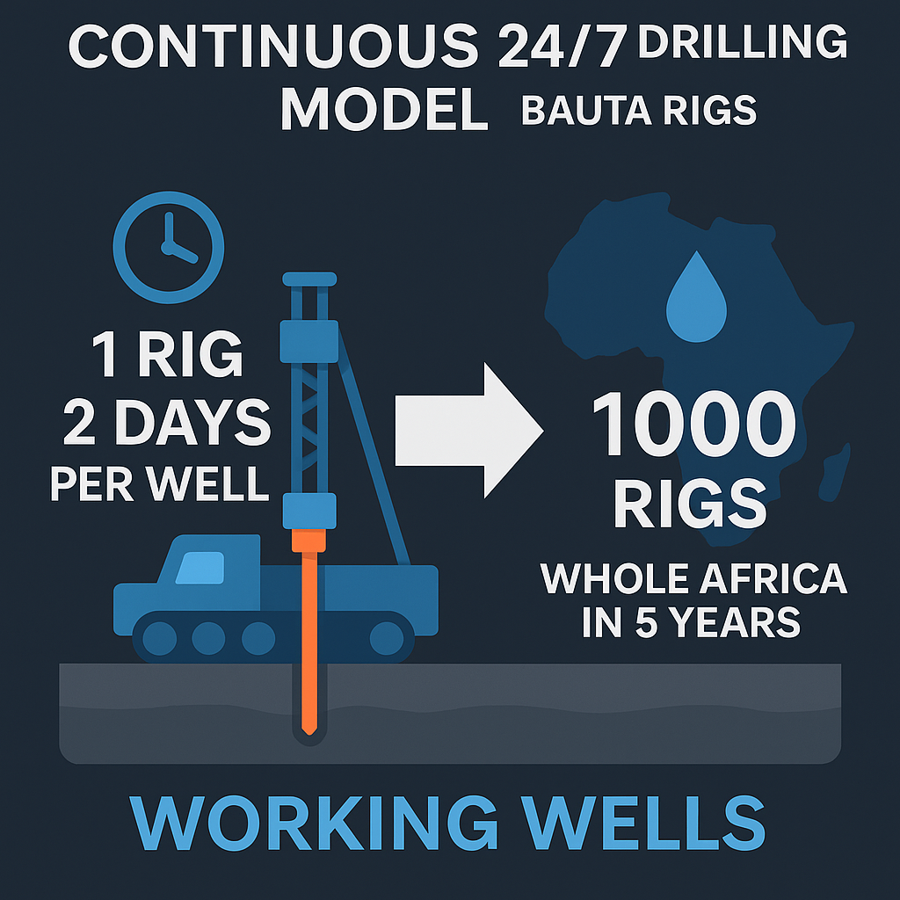
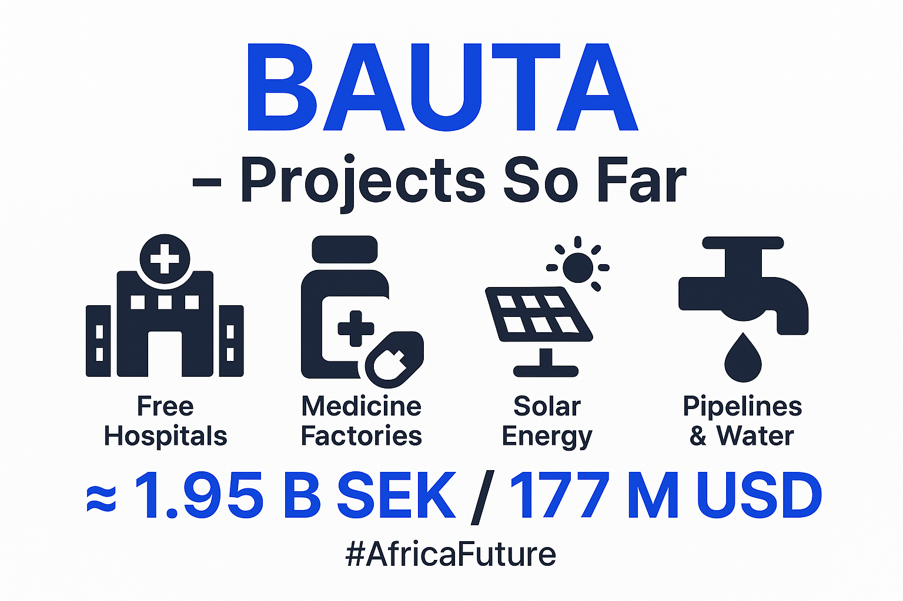

Mitt arbete handlar om mer än teknik – det handlar om att skapa hopp. Jag tror att teknik ska tjäna människan, inte tvärtom. Varje projekt jag bygger leds av kärlek, rättvisa och medkänsla.
Ett av mina pågående humanitära projekt är Fatimah Support – en sajt byggd för att hjälpa en kvinna i Ghana att få tillgång till mat och grundläggande stöd via direkta donationer.
Besök Fatimah Support →(mitt senaste projekt)
Fokus just nu: att expandera BAUTA-projekten i Afrika – inklusive gratis sjukhus, medicinfabriker, mikrolånsbanker och hållbara energinät. Motto: ”Free of charge – for Africa.”
BAUTA Water Wells Drilling – vattenbrunnar borras dygnet runt för fria källor i Afrika.
BAUTA 1000 Drilling Rigs – 1000 borriggar, målet: en brunn i varje by.
BAUTA Vision – en rörelse för ett självförsörjande och friskt Afrika.